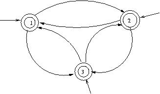
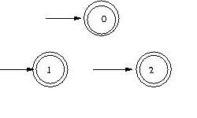
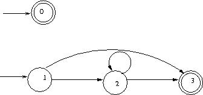
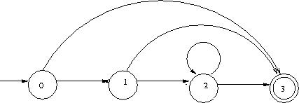
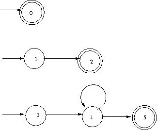
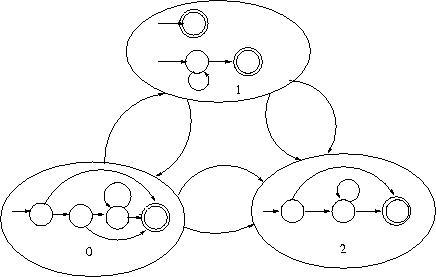

| Prev | Home | Next |
The package allows you to input the knowledge about the relationships among the labels through an input graph. A graph here is defined by a quadruple (V, E, S, En), where V is the set of vertices (states or nodes), E is the set of edges, S is the set of start states and En is the set of end states. Note that S and En are subsets of V. The nodes in the graph represent states; each state is associated with a label (y). A label can be associated with more than one state. Edges of the graph represent dependence relationship between the states of the model. Given a set of labels and their dependencies in a given application domain, different kind of graphs can be defined.
You can specify certain types of graphs to be used for learning. This can be done using the modelGraph parameter given in the configuration file input to the system. The supported graph models are described below.
Given a set of labels, this model associates exactly one state with each label. It constructs an edge between every pair of states (including an edge from a state to itself). This model can be used for the cases where the sequential relationship is to be learned from the given dataset. EdgeFeature can be used in this model which will learn weights according to the probability of transition from one state to another, from the training set. Specify modelGraph="naive" in the configuration file to create a naive graphical model. Figure 1 shows a naive model with three labels. Note: In all figures, a circle indicates a state, a directed arrow from one state to other indicates an edge, start state is shown by a directed arrow input to the state, and an end state is indicated by a double circle.
|  |
| Figure 1: Naive model |
This model again constructs one state for each label in the label set.
As the name implies, there are no edges in the graph.
Hence, this model does not encode any sequential relationship between the labels of the model.
Specify modelGraph="noEdge" to create a no edge model.
Figure 2 shows a no edge model with three labels.
|  |
| Figure 2: NoEdge model |
This model allows you to create multiple states for a given label. The idea here is to create two models -- an outer and an inner model. The outer model encodes sequential relationship among labels and can be any one of the above two models, while the inner model is a graph consisting of states associated with same label and edges between them. This inner model allows you to model a sequence of tokens all having the same label. It represents a set of states associated with each node of the outer model.
Conceptually, this model consists of two models: an inner and a outer model, but actually, there is only one model. The two models are merged into a single flat graphical model by creating edges between the end state(s) of one inner model to the start state(s) of another inner model, for each edge in the outer model.
For example, consider two outer model nodes y_i and y_j connected by the edge e_ij. Assume that the inner model of y_i contains 3 end states and inner model of y_j contains 4 start states. In the resultant model, there will be a set of 12 edges resulting from the outer model edge e_ij. Thus, the resultant set of edges for edge e_ij is:
Various types of inner models supported by this package are described below:
|  |
| Figure 3: Boundary model |
|  |
| Figure 4: Chain model |
|  |
| Figure 5: Parallel model |
A few examples of the graph property along with their explanations are given below. For each example, the number of labels are assumed to be 3.
|  |
| Figure 6: Nested model - "naive,4-chain,2-parallel,boundary" |
| Prev | Home | Next |
| Copyright © 2004 KReSIT, IIT Bombay. All rights reserved |